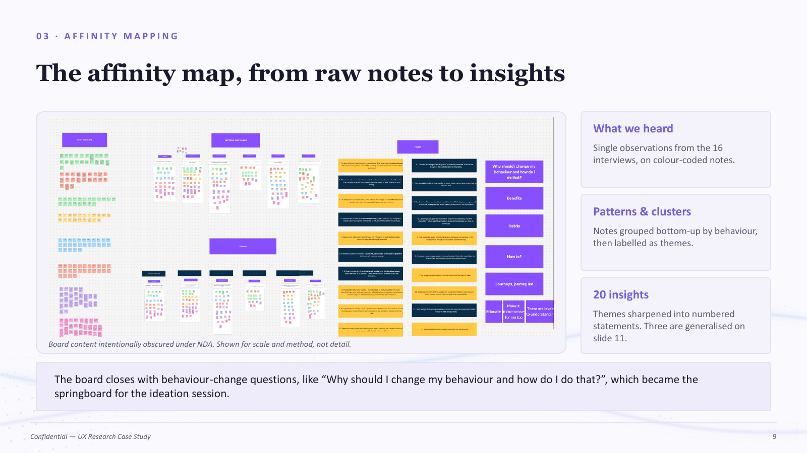
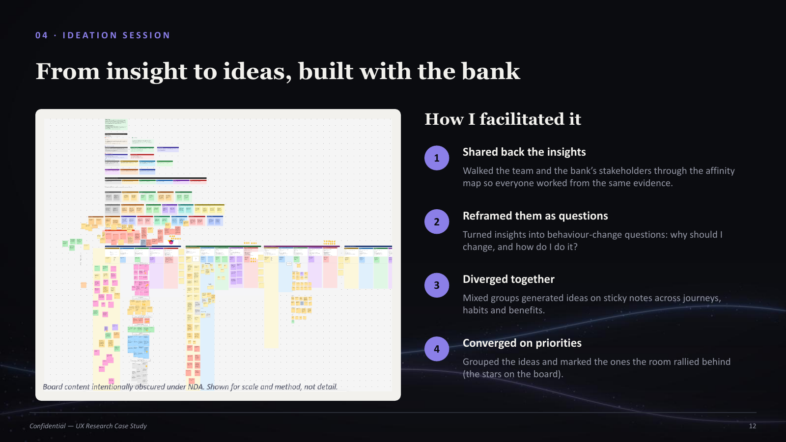

01 · Ownership
- Who is responsible for APIs across their lifecycle?
- How clearly are responsibilities and accountability understood?
- Where might ownership become fragmented?
I researched why teams struggled to find and reuse existing APIs, then synthesised the findings into practical recommendations for improving discovery and trust.
Within a large African banking environment, I helped investigate why teams rebuilt capabilities instead of reusing APIs already available. I designed the interview protocol, independently led 9 of 16 stakeholder interviews, contributed to synthesis and helped translate the findings into six cross-cutting themes and recommendations.
Scope and evidence: Qualitative discovery under NDA; findings informed recommendations, not a measured production outcome.
The API Marketplace existed, but people still relied on personal networks to find capabilities. Unclear ownership, uncertainty about support and delivery pressure made reuse feel risky or slower than rebuilding.
The tree structures the research problem into connected questions. The branches are lines of inquiry, not claims that every factor was confirmed.
Identify recurring organisational and ecosystem factors, then use the evidence to shape practical recommendations.
Research goal: Investigate how organisational structures, team behaviours and collaboration practices influence API ownership, discovery and reuse, and identify opportunities to improve the enterprise API ecosystem.
Independently led nine stakeholder interviews as part of a seven-person design team’s research effort.
Helped organise observations and patterns through affinity mapping and synthesis.
Connected day-to-day workarounds with wider organisational incentives and ownership.
Client and sensitive organisational details are anonymised under NDA.
I structured the protocol to move from participants’ roles and everyday experience into specific behaviours, organisational conditions and future possibilities. The sequence helped establish context before exploring sensitive friction, while scenario prompts made it easier to discuss what teams actually do.
Question focus: role, relationship to APIs, and how participants currently discover or interact with them.
Objective: understand how the API ecosystem is experienced across product, platform, architecture, engineering, delivery and business teams.
My thinking: establish psychological safety and a shared baseline before asking people to describe problems or workarounds.
Question focus: what works, where discovery becomes difficult, when teams reinvent existing capabilities, and what happens when an API cannot be found or trusted.
Objective: identify opportunities and barriers related to collaboration, discoverability, reuse and knowledge-sharing.
My thinking: ask about recent examples rather than general satisfaction, so the discussion surfaces concrete actions, dependencies and workarounds.
Question focus: scenario-based prompts about changes to a shared API, governance, ownership, handoffs and reuse decisions.
Objective: identify practical barriers to reuse and assess how ready the organisation is for broader ecosystem enablement.
My thinking: scenarios reveal how people respond when responsibilities, dependencies or API contracts shift, rather than relying only on what they say they would do.
Question focus: knowledge-sharing, incentives, team priorities, cross-team relationships and appetite for a Community of Practice.
Objective: assess organisational readiness for an API Community of Practice and identify the conditions that could support participation.
My thinking: API reuse depends on more than finding documentation. I wanted to understand whether people have the motivation, trust and connections to share knowledge across team boundaries.
Question focus: the desired two-year future, the biggest lever for improvement, leadership’s role, strategic risks and investment priorities.
Objective: establish qualitative indicators of ecosystem maturity to inform the CoP’s design, operating model and governance approach.
My thinking: keep the themes consistent across roles, but adjust the altitude. Practitioners described lived experience; executives considered system-level conditions and the ability to enable change.
It moved from context to current behaviour, then to collaboration and culture, before asking participants to imagine change. This reduced the risk of leading people toward a preferred solution too early.
The recommendation was not to discard the API Marketplace. It was to recognise that a platform alone could not resolve the people and operating-model barriers around it. The machine-to-organism metaphor reframed the ecosystem from a fixed, centrally controlled mechanism into a connected living system shaped by relationships, learning and shared ownership.
A machine model emphasises tools, control and predictable inputs. The organism model recognises that API adoption also depends on trust, incentives, shared learning and the ability of teams to adapt together.
Build a Community of Practice that gives API practitioners a shared identity and a reason to participate. People should be able to recognise themselves as part of a wider community, exchange experience and learn from peers across organisational boundaries.
Design the community to grow through member contribution, peer support and shared problem-solving, rather than depending entirely on central coordination. Create a capability where different users can ask questions, share patterns, discover expertise and learn more about APIs.
Governance and consistency still matter in a banking environment. The opportunity is to pair clear standards and accountability with space for the community to organise around real needs. Too much central control risks reproducing the machine model; too little structure can weaken trust, quality and ownership.
I facilitated the affinity mapping exercise with the wider team, clustering observations bottom-up by behaviour rather than by interview question. This helped connect individual workarounds to recurring patterns and gave the team a shared basis for interpreting what the ecosystem needed.

The ideation session used the emerging themes to explore how the bank could move beyond a tool-led response. The machine-to-organism reframe helped the team consider community, shared identity, self-organisation and learning as connected parts of the proposed capability.

The work connected interview evidence and six cross-cutting themes to a strategic direction: pair the existing platform with a community that builds identity, belonging, peer learning and shared responsibility. The organism metaphor gave leadership a way to discuss the human and organisational conditions needed for API reuse.
When a system is not working, improving its interface may not be enough. The more useful design question can be how people connect, learn, take ownership and adapt together around the system.